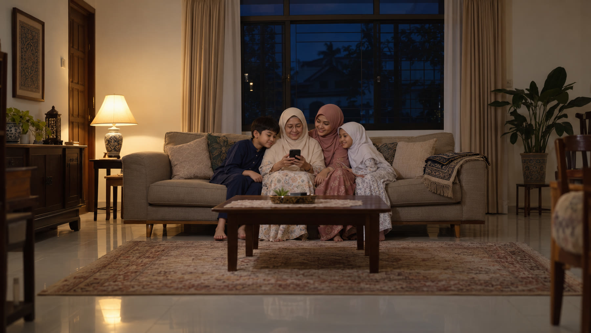

Asked and answered
The questions readers ask before they open the deck, in plain words. Something else? Write to hello@baikapp.com. A person answers within 2 working days.
The duas
Are the duas authentic?
Yes. Qur'anic text is transcribed from the Uthmani mushaf and verified against Tanzil, never typed by hand and never generated. Every card names its exact source, and a dua that cannot carry a checkable source does not enter the deck.
Who checks them?
Scholar review is the last gate before public release. Every card records whether it has been reviewed and by whom, and today that field reads pending. Baik says so on the card rather than hiding it.
Where do the sources come from?
The Qur'an in the Uthmani mushaf, verified against Tanzil; Sahih al-Bukhari, Sahih Muslim and Sunan Abi Dawud for the hadith; JAKIM guidance for the prayer times and the local practice.
Bahasa Melayu?
Ya, insya-Allah. The deck was born bilingual: the BM layer is in the data for every card, and the toggle in the app switches every title, purpose, meaning, reading and source.
Can I hear the Arabic?
Your device reads the Arabic aloud so you can follow the words. It is a speech voice, not a reciter and not tajwid, and the app says so. Recorded recitation by a named qari is in build.
Free and Premium
Is Baik really free?
Every dua, its Arabic, transliteration, meaning and source, is free forever. Premium only unlocks tools around the duas: unlimited saves, memorisation, guided journeys, audio and offline packs.
Why charge for anything in a religious app?
Because the alternative is advertisements, and we will not put a banner under an ayah. Premium pays for the app, the review and the servers.
Can I pay once instead of monthly?
Yes. Lifetime is RM358.20, two years' worth, paid once. The first 1,000 founding members pay RM129.90 for life.
How do I cancel?
In one tap, in Account. No email, no call. A reminder arrives 2 days before any trial ends, and your saves, notes and table stay yours on the Free plan.
The app
Do I need to download the app?
No. The web version works in any browser today, free. The mobile app is on its way and adds offline access, notifications and audio downloads.
When does the app launch?
It is in development. The first 1,000 users get the founding member lifetime price of RM129.90. Open the web app and you will see the plan and progress inside.
Does it work offline?
The web version needs a connection today. Offline packs are in build and arrive with the app.
Your privacy
What data do you collect?
No advertisements and no selling of personal data. Your notes, saves and reading habits stay yours.
Why does it ask for my location?
Only ever for Qibla and prayer times, and only when you ask for them. Nothing else on the deck needs it.

The right dua, in seconds,
with its source
It is free, and it always will be. Say what you are facing and draw the card.